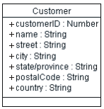
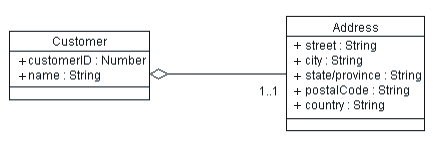
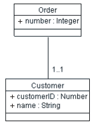
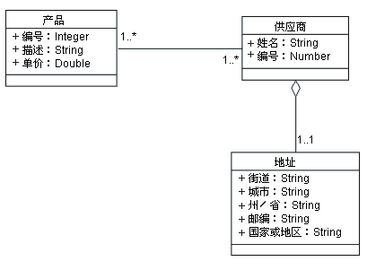
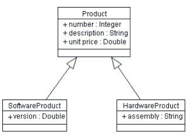
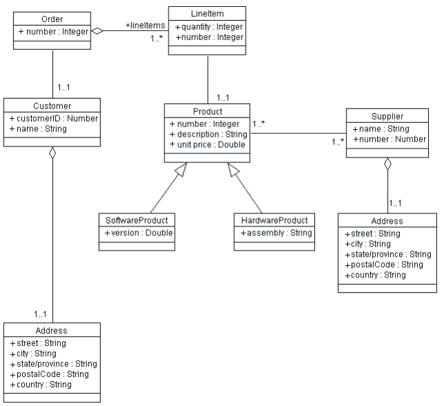

| 指南：反向设计关系数据库 |
 |
|
| 相关元素 |
|---|
简介本指南描述了反向设计数据库并将生成的数据模型表映射到设计模型中的设计类所涉及的步骤。此流程可以由数据库设计员用以将修改的开发植入数据库中（作为演进开发周期的一部分）。 数据库设计人员将需要在项目的整个开发生命周期内管理反向设计流程。在许多情况下，反向设计流程是在项目生命周期早期执行的，然后数据设计的更改受到递增地管理，而不需要随后对数据库执行反向设计。 反向设计数据库和将生成的数据模型元素转换为设计模型元素的流程的主要步骤如下：
反向设计 RDBMS 数据库或 DDL 脚本以生成数据模型数据库或“数据定义语言”（DDL）脚本反向设计流程通常生成一组模型元素（表、视图、存储过程等）。根据数据库的复杂性，数据库设计人员可能需要将反向设计的模型元素划分为包含逻辑相关的表组的几个主题区域包。 将数据模型转换为设计模型可以按以下过程从数据模型中的模型元素生成设计类。 将数据库的结构复制到类模型中，这是比较简单的。下面列出的流程描述了将数据模型元素转换为设计模型元素的算法。 下表显示了设计模型元素和数据模型元素之间常规映射的摘要。 数据模型中有一些在设计模型中没有直接相关关系的模型元素。这些元素包括表空间和数据库本身，它们对数据库的实际存储特征建模并由组件表示。另一项是数据库视图，它们是“虚拟”表，并且在设计模型中没有任何意义。最后，对表的主键和数据库触发函数的索引（用于优化数据库的操作）仅在数据库和数据模型环境中才有意义。 将表转换为类对于要转换的每个表，创建一个类来代表该表。对于每一列，使用适当的数据类型创建该类的一个属性。尝试尽可能使将属性的数据类型与相关联的列的数据类型相匹配。 示例 请考虑下图中显示的、具有以下结构的数据库表 Customer：
表 Customer 的表定义 现在，我们创建一个类 Customer，在下图中显示了其结构：  初始 Customer 类 在这个初始 Customer 类中，Customer 表中的每一列都有一个属性。 因为可以查询源表中的所有列，每个属性都具有公共可视性。 请注意，属性左侧列出的“+”图标表示该属性是“公共”的；缺省情况下，从 RDBMS 表派生的所有属性都应是公共的，因为 RDBMS 一般允许对所有列进行无限制的查询。 确定是嵌入式类还是隐含类从直接的表－类映射中生成的类通常将包含可以分为单独类的属性，尤其是在属性出现在多个转换类中的情况下。这些“重复的属性”可能是因为性能而对表反向规范化所生成的、或者可能是因为数据模型过度简化而生成的。在这些情况下，将相应的类分为两个或更多类，以代表这些表的规范化视图。 示例 定义上述 Customer 类之后，我们可以定义一个包含所有地址信息的 Address 类（假设我们的系统中还有其他对象带有地址信息），则将得到以下类：  经修订的 Customer 类以及抽取出的 Address 类 因为客户的地址可以视为客户的一部分，这两个类之间所画的关联是聚集关系。 处理外键关系对于表中的每个外键关系，在相关联的类之间创建一个关联，从类中除去映射到外键列的属性。如果该外键列初始情况下表示为一个属性，则从类中除去它。 示例 假设 Order 表的结构如下所示：
表 Order 的结构 在上面列出的 Order 表中，Customer_ID 列是一个外键引用；此列包含与 Order 相关联的 Customer 的主键值。我们将在设计模型中表示这一情况，如下所示：  在设计模型中表现外键关系 外键表示为类 Order 和 Item 之间的关联。 处理多对多关系RDBMS 数据模型使用连接表或关联表来表现多对多关系。 这些表使多对多关系可以使用一个中间表来表示，该表包含可连接在一起的两个不同表的主键。 需要连接表的原因是因为一个外键引用仅可包含对单个外键值的引用；当一个单行可能与另一表中的许多其他行相关时，就需要一个连接表来与它们相关联。 示例 考虑 Product 的情况，Product 可由多个 Supplier 中的任一个提供，并且任一 Supplier 都可提供任意数量的 Product。Product 和 Supplier 表的结构定义如下：
Product 和 Supplier 表定义 为了将这两个表链接在一起以找出特定供应商提供的产品，我们需要一个 Product-Supplier 表，其定义如下表中所示。
Product-Supplier 表定义 该连接表包含产品和供应商的主键，并将它们链接在一起。该表中的一行将表示一个特定供应商提供一项特定产品。所具有的 Supplier_ID 列与特定供应商标识匹配的所有行将提供该供应商提供的所有产品的列表。 在设计模型中，这种中间表是多余的，因为一个对象模型就可以直接表现多对多关联。Supplier 和 Product 类及其关系在下图中显示，还有 Address 类，后者是按照先前的讨论从 Supplier 中抽取的。  Product 和 Supplier 类表现 引入泛化关系通常，您将会发现具有某种类似结构的表。在数据模型中，没有泛化关系的概念，所以无法表现出两个以上的表具有某种共同的结构。有时，共同结构是为提高性能而进行的反向规范化所产生的，上述的“隐含” Address 表（我们将它抽取到一个单独的类中）就属于这种情况。在其他情况下，多个表共享更基础的特征，我们可以将这些特征抽取到一个具有两个以上子类的泛化父类中。要发现泛化的机会，则在几个表（这些表与其说不同，不如说相似）中查找重复的列。 示例 考虑以下的表 SoftwareProduct 和 HardwareProduct，如下所示：
SoftwareProduct 和 HardwareProduct 表 请注意，以蓝色突出显示的列是完全相同的；这两个表所共享的定义大体相同，仅略有差别。我们可以抽取一个共同的 Product 类并将 SoftwareProduct 和 HardwareProduct 作为 Product 的子类来表示这种关系，如下图所示：  SoftwareProduct 和 HardwareProduct 类，显示泛化为 Product 类 在下图中，所有类定义放在一起，显示了一个订单输入系统的合并类图（仅限于主要类）。  订单输入系统的合并类图 在设计模型中复制 RDBMS 行为复制行为更困难，因为通常关系数据库不是面向对象的，并且似乎与对象模型中对类的操作没有任何相似之处。以下步骤可能有助于重新构建上述类的行为：
在设计模型中组织元素在设计模型中，根据表－类转换而创建的设计类应，（在需要时）基于应用程序的整体体系结构结构，组织为相应的设计包和／或设计子系统。关于应用程序体系结构的概述信息，请参阅概念：分层和概念：软件体系结构。 |
||||||||||||||||||||||||||||||||||||||||||||||||||||||||||||||||||||||||||||||||||||
© Copyright IBM Corp. 1987, 2006. All Rights Reserved. |